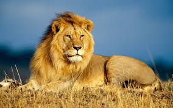
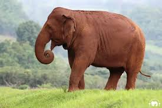
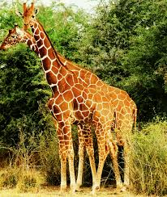
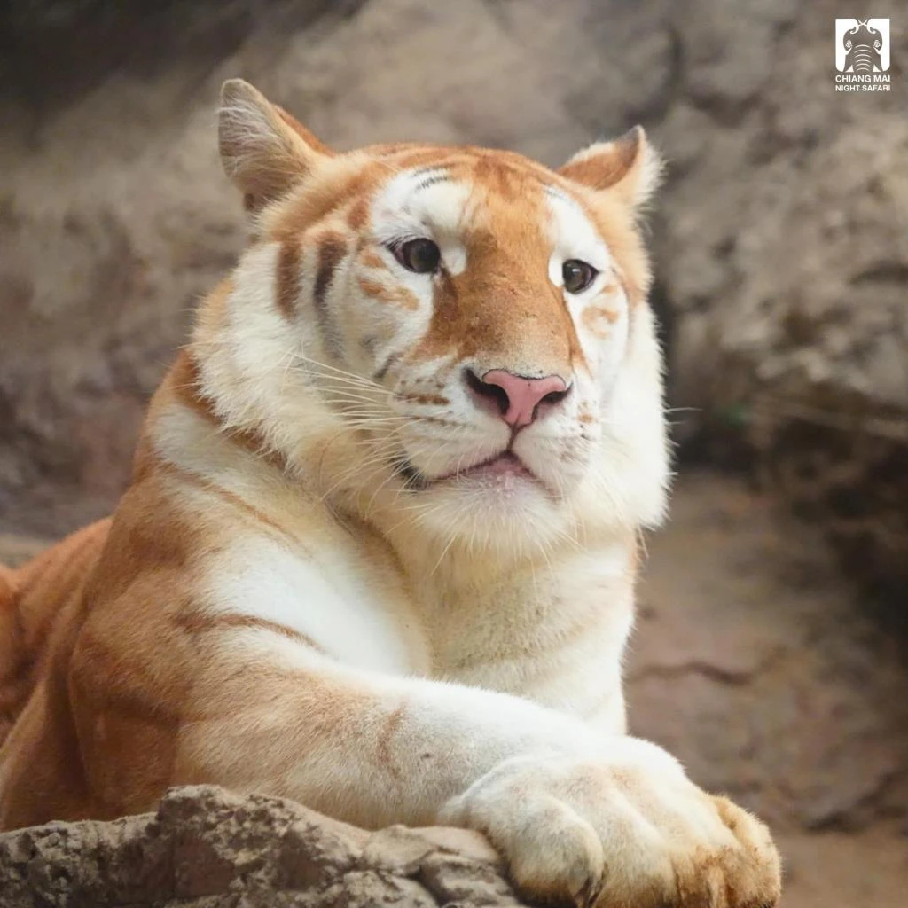
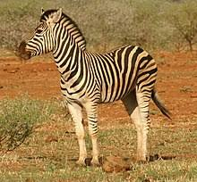
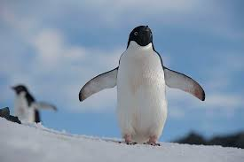
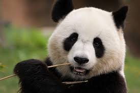
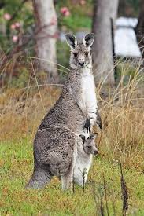
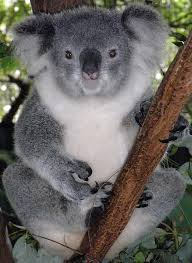
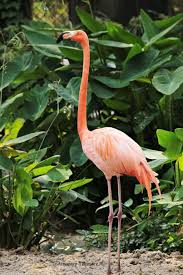

สิงโต
ราชาแห่งสัตว์ป่า สิงโตเป็นสัตว์ที่แข็งแรงและมีพละกำลังมาก

ช้าง
ช้างเป็นสัตว์เลี้ยงลูกด้วยนมขนาดใหญ่ที่สุดในโลก และเป็นสัตว์ที่ฉลาด

ยีราฟ
ยีราฟเป็นสัตว์ที่สูงที่สุดในโลก ด้วยคอยาวและขาที่ยาวพิเศษ

เสือ
เสือเป็นนักล่าที่รวดเร็วและทรงพลัง มักพบในป่าทั่วโลก

ม้าลาย
ม้าลายมีลายทางขาวดำที่เป็นเอกลักษณ์ และสามารถวิ่งได้เร็ว

เพนกวิน
เพนกวินเป็นนกที่บินไม่ได้ แต่สามารถว่ายน้ำได้อย่างคล่องแคล่ว

แพนด้า
แพนด้าเป็นสัตว์กินพืชที่น่ารัก มักพบในป่าของจีน

จิงโจ้
จิงโจ้เป็นสัตว์เลี้ยงลูกด้วยนมที่มีถุงหน้าท้อง และกระโดดได้ไกล

โคอาลา
โคอาลาเป็นสัตว์ที่ชอบกินใบยูคาลิปตัส และใช้เวลาส่วนใหญ่ในการนอน

นกฟลามิงโก
นกฟลามิงโกมีขนสีชมพูที่สวยงาม และยืนได้ด้วยขาเดียว